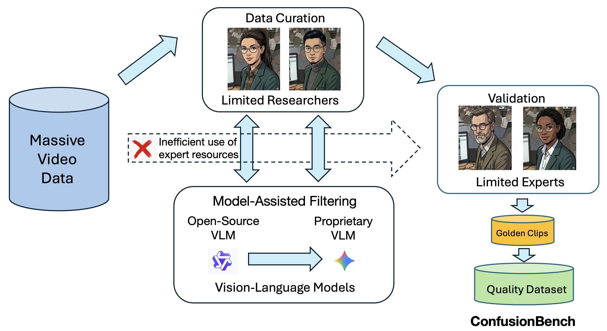

Recognizing and localizing student confusion from video is an important yet challenging problem in educational AI. Existing confusion datasets suffer from noisy labels, coarse temporal annotations, and limited expert validation, which hinder reliable fine-grained recognition and temporally grounded analysis. To address these limitations, we propose a practical multi-stage filtering pipeline that integrates two stages of model-assisted screening, researcher curation, and expert validation to build a higher-quality benchmark for confusion understanding. Based on this pipeline, we introduce ConfusionBench, a new benchmark for educational videos consisting of a balanced confusion recognition dataset and a video localization dataset. We further provide zero-shot baseline evaluations of a representative open-source model and a proprietary model on clip-level confusion recognition, long-video confusion localization tasks. Experimental results show that the proprietary model performs better overall but tends to over-predict transitional segments, while the open-source model is more conservative and more prone to missed detections. In addition, the proposed student confusion report visualization can support educational experts in making intervention decisions and adapting learning plans accordingly.

@article{dong2026confusionbench,
title = {ConfusionBench: An Expert-Validated Benchmark for Confusion Recognition and Localization in Educational Videos},
author = {Dong, Lu and Wang, Xiao and Frank, Mark and Setlur, Srirangaraj and Govindaraju, Venu and Nwogu, Ifeoma},
journal = {arXiv preprint arXiv:2603.17267},
year = {2026}
}